GAL
GAL
 ES
ES
 EN
EN

Dende a organización, o aloxamento máis económico que podemos ofrecer é na Residencia Universitaria Bal&Gay . As prazas son limitadas por estrita orde de reserva.
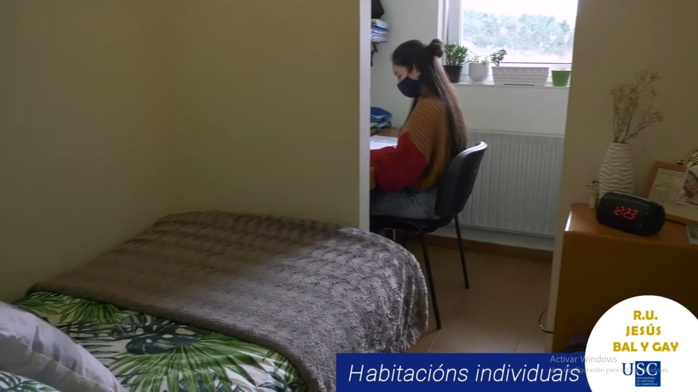
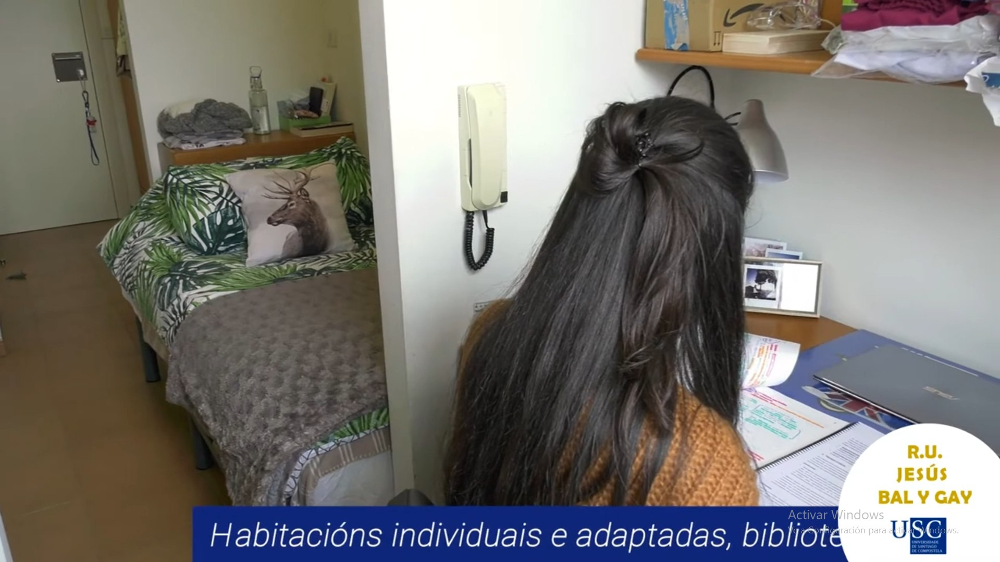
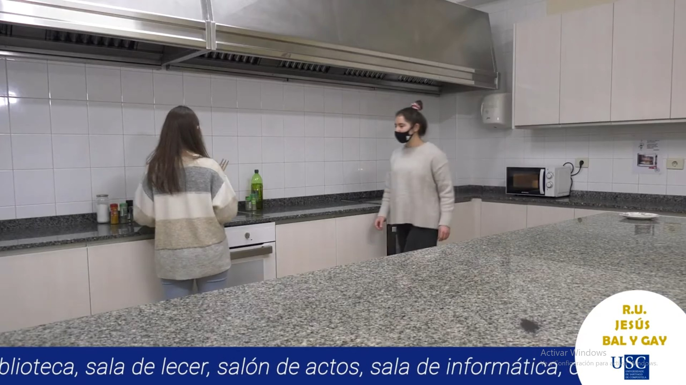
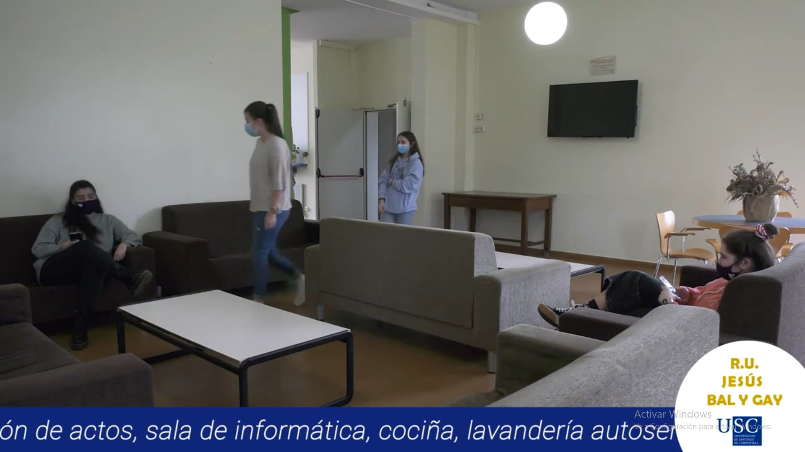
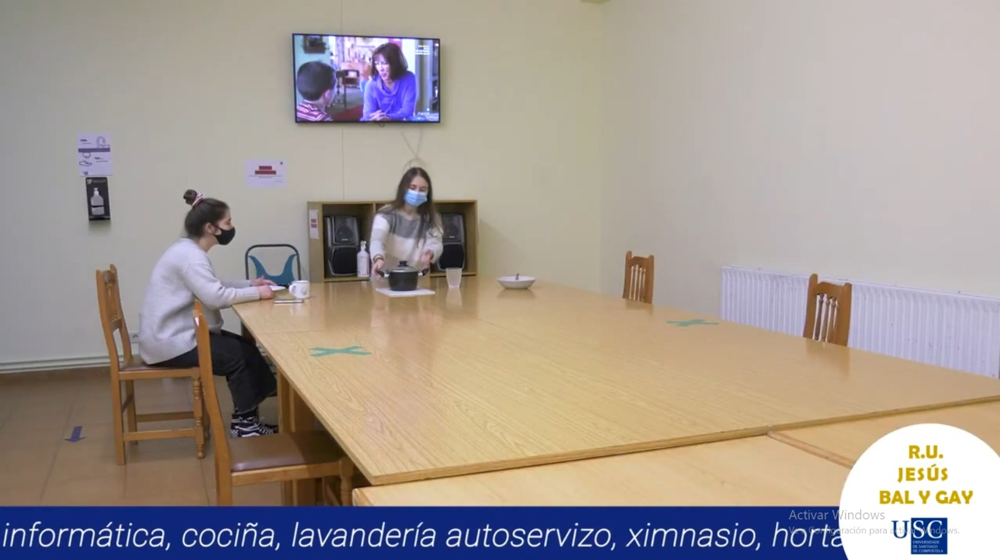
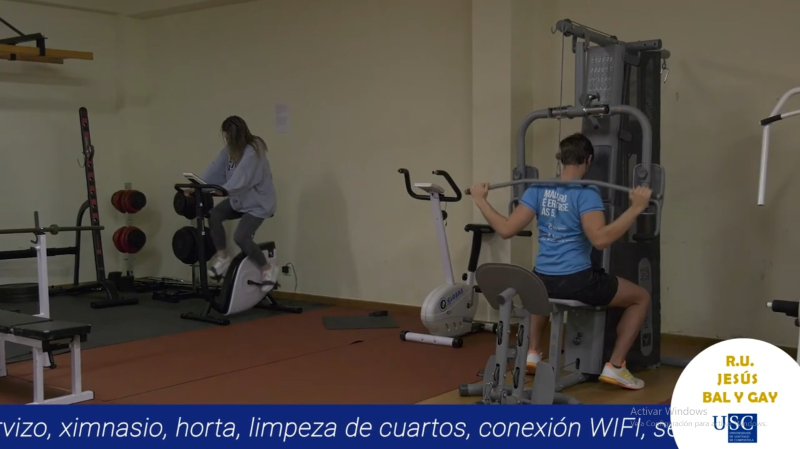
Conta con zonas arredor para aparcar e está a 8 minutos andando e 3 en coche.
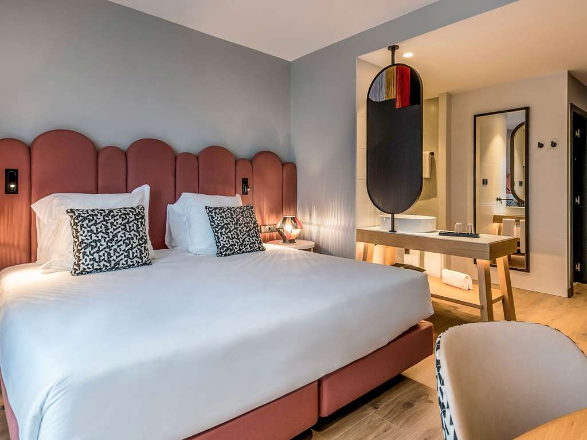
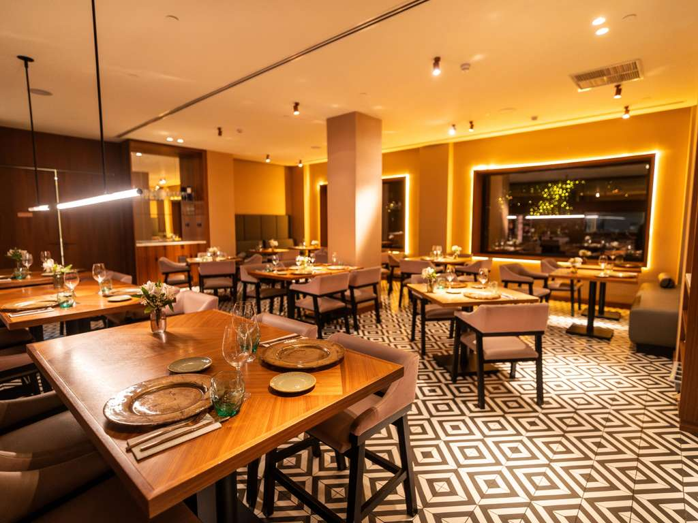
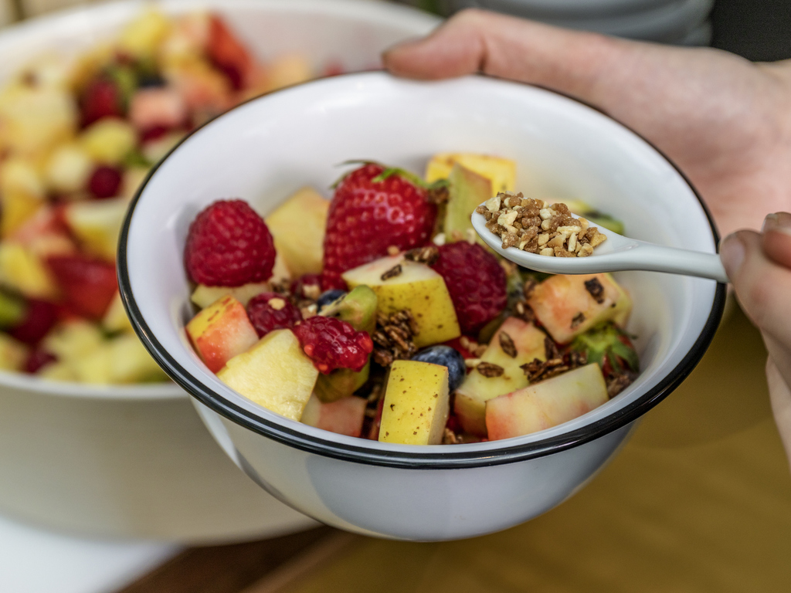
14 minutos andando e 11 en coche.
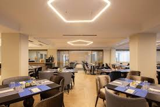
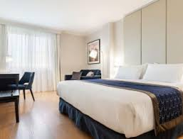
19 minutos andando e 9 en coche.
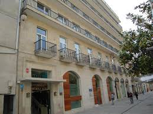
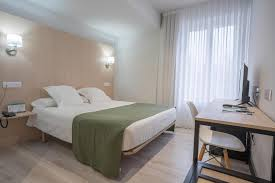
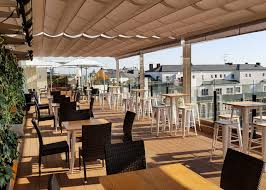
20 minutos andando e 4 en coche.
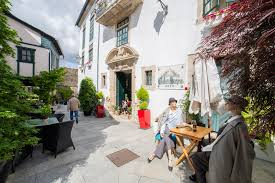
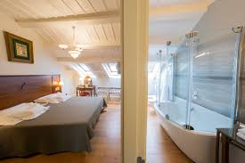
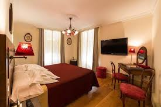